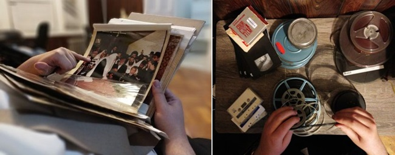

Rebbedrive – The Online Chabad Database
Gazing at the picture of the Rebbe is a known concept in Lubavitch, especially at times when it isn ’ t possible to see the Rebbe. * In recent years, a group of bachurim from Chabad yeshivos in New York has put up tens of thousands of pictures on an internet site, including thousands of pictures that were previously unknown. * The bachurim have also uncovered hundreds of new video excerpts of the Rebbe, including footage of events and farbrengens that nobody has ever seen! * They decided to “ squander the treasures ” and share them with the world .

“She should look at a picture of the Rebbe, my father-in-law, when she feels a weakening of her good will and remember that he too, since he is a faithful shepherd of Israel, is looking at her at the same time, and this will help for the aforementioned.” This is what the Rebbe wrote to a woman who complained about spiritual weakness and problems with maintaining her positive commitments.
I sat with a group of bachurim and discussed RebbeDrive with them. It’s not often that I interview such a large group of bachurim. There was lots of enthusiasm, determination and emuna. What is RebbeDrive? We’ll get to that shortly, but first, a personal memory of mine.
When I was a child before bar mitzva and also in the years that followed, I collected pictures of the Rebbe from the early years of the nesius. I’m talking about the middle of the 80’s; in certain ways, that was light years from our times. Pictures of the Rebbe were not as available as they are today. Few had collections and (almost) none of them thought of sharing his treasures with others. Slowly, my collection grew. I remember my excitement with each rare picture I managed to add to my collection.
One time, when I was in yeshiva, I met an American bachur who brought his collection with him. What a collection! He had about 50 black and white photos of the Rebbe, rare ones, from the early years of the nesius. He was willing to share the pictures with me for a price. Photocopying them also cost money and I used all the savings that I had at the time to do it.
Then (a few months ago) I met this chevra who just put up thousands of new photos of the Rebbe. They told me they have tens of thousands more pictures that they didn’t publicize yet. I could feel the very feelings that I had at that time flowing through my body and rising up in my throat…
That is what RebbeDrive is about. It’s a repository of uploaded files that contain many collections associated with the Rebbe: tens of thousands of pictures, movies, diaries and sichos kodesh. Many of them have never been seen before by the public! With this database anyone can gain access and sync it to his personal computer or mobile device.
Interestingly, another definition of “drive” is motivation, passion, and that is precisely what I saw in those bachurim’s eyes.
HOW REBBEDRIVE BEGAN
This story began as a practical solution to a common problem. There used to be a library of audio recordings or videotapes, and if you wanted to hear a sicha of the Rebbe or watch a video, you had to search a lot until you found it. With technological progress, the recordings were digitalized and put on discs and then on iPads.
Bachurim are always ahead of their time. Back in the 90’s, bachurim in the U.S. had a drive on which they stored videos of the Rebbe as well as pictures.
One of the bachurim said that when he learned in Oholei Torah, the bachurim had iPads. “In every yeshiva there was a hard disc which had all the Rebbe’s audio and video that bachurim were able to collect and that is what they used.”
He maintains that in the 60’s and 70’s, kids were ardent collectors of pictures of the Rebbe, which was not as popular in the 80’s.
Why?
“Because in the 80’s, especially after 5748, the Rebbe came out to the public much more for dollars or t’fillos, and when they saw the Rebbe three times a day, people felt less of a need to collect pictures of him; they had the original …”
The next era for pictures and videos of the Rebbe came after Gimmel Tammuz. In camps, at that time, they wanted to strengthen hiskashrus and awareness of the Rebbe and “Rebbe albums” became popular. Every camp had a special album that the bachurim and children needed to fill. The goal was for the children to be busy with the Rebbe; not just with his teachings but also via video and pictures.
THE SIGNIFICANCE OF THE BIRDS IN THE PICTURE OF THE REBBE
A distinguished Chassid had yechidus in 5729 in which he complained about interference by the yetzer ha’ra. The Rebbe told him: Keep a picture of the Rebbe, the Nasi, and every time difficulties come up, look at the picture. This will remind you that the Rebbe is always looking at you. Consequently, you will be able to overcome the undesirable things.
It was two or three years ago when some bachurim from Oholei Torah and the yeshiva in 770 decided to take the initiative. They took the hard drives of several collectors with everything they contained, and put it all up on Google drive. “The idea was that rather than every individual having his own collection of pictures, there would be a shared database which everyone could enjoy.
“Every day, I got between five and ten requests for inclusion in the new database. I saw there was a demand and the bachurim decided we need a site where anyone, from anywhere in the world, could visit, see, read and enjoy the treasures associated with the Rebbe. That was the beginning; we did something very basic just to get something out there.”
What feedback did you get?
“On the first day it went up, we saw nearly 5000 visits to the site. There was clearly a huge interest.”
With time, the appetite grew and the bachurim then decided to expand the database of pictures and videos. They did not want to suffice with the thousands of existing pictures; they wanted to go to collectors and photographers to ask for their material.
How did you get to collectors?
“We’d go to one who would tell us about someone else with a collection. They all know one another.”
That surprises me a bit. Are there people who took pictures of the Rebbe over the years or collected pictures and kept them to themselves for decades?
“It really is bizarre, because we go to people and ask for their pictures and they don’t understand it. They are completely surprised. They’re sure that what they have, everyone has. They themselves don’t realize what a treasure they have.”
Can you tell us about an interesting incident with someone from whom you got pictures?
“We went to someone whom we heard had pictures. He apologized and said they are very unclear; he had a fire, etc. In the end, we discovered treasures.
“In general, there wasn’t a single collector whose house we went to who didn’t have a fire, a flood, or a burst pipe that caused damage or almost caused damage to his collection of pictures. There were instances in which many precious pictures were destroyed because of these incidents, but there were also cases in which the pictures somehow managed to survive. We also have pictures that are partially burned and were saved at the last minute. Every picture has its mazal …
“There are people who, unfortunately, threw out entire collections when they thought their pictures were known to all.
“Just yesterday there was someone who told me about someone else who has a big collection of pictures of G’dolim that is going to g’niza. I don’t know just what he had but I understood that there were also pictures of the Rebbe. I asked him whether I could come and take the pictures and he said, Oy, just the week before he threw it into the g’niza in 770.
“Whenever we go to the homes of collectors, we don’t know what we will find there. There were times that people called us to come because they were sure we would want their treasures, but in the end it was nothing special.”
Was there ever a picture that especially moved you?
“One day, I heard about someone, not a collector, who has an album with pictures of the Rebbe. I didn’t think he would have anything special and it took time until we were able to meet. When we got to his house, we started going through the photos and it seemed there were none that weren’t familiar. Suddenly, we noticed a photo from 2 Kislev 5748 where the Rebbe is standing near the side entrance to 770.
“I immediately recalled the story behind that picture. They were waiting for the arrival of the s’farim from the courthouse after ‘didan natzach.’ Curious bachurim went out in the middle of the learning session to be present at that moving moment.
“Suddenly, the Rebbe emerged from the side entrance of 770 and began censuring the bachurim, that instead of learning they were outside looking at the birds, etc.
“I looked at the picture and saw the Rebbe standing, and next to him are several birds that can actually be seen in the picture. When you see the birds and you know what the Rebbe is saying at that moment, it takes on a different significance.”
One of the people active in collecting pictures said:
“Just recently we got a large collection of albums and pictures from Shazar and Begin’s visit to the Rebbe. There are some pictures that haven’t been publicized yet and you see the Rebbe looking very malchus’dik.”
Have there been people who refused to share their collections with you?
“There have not yet been any people who refused us entirely. Most just push us off with a lot of back and forth, but the very act of publicizing new treasures reminds people to get their collections out of their basements and attics.”
THOUSANDS “LIVE” WITH THE REBBE THROUGH PICTURES
“While you eat, you should have in front of you a picture of the Rebbe, my father-in-law.” This is what the Rebbe told someone who complained that he was eating with excessive gusto.
And in a yechidus with someone (at the end of the 60’s) about foreign thoughts associated with inappropriate sights the Rebbe instructed, “Keep a picture of the Rebbe by you and when you have these thoughts, tell the yetzer ha’ra: He’s watching!”
Today, pictures of the Rebbe are readily accessible. There are tens of thousands of them circulating, some better known and others less so. However, you would be surprised to know that there were times when pictures of the Rebbe were rare and this was by explicit order from the Rebbe. That’s the way it was in the early years of the nesius. The Rebbe would cover his face intentionally when the photographer tried to take his picture when he was mesader kiddushin at a wedding.
According to Mr. Harry Trainer, the photographer who wanted to photograph the Rebbe in those early years, the Rebbe would hide his face at weddings. It was only after Trainer said his parnasa was adversely affected that the Rebbe stopped hiding his face, even though it was obvious he did not like being photographed.
Mr. Trainer said:
“I was once at a Lubavitch wedding at the Gold Manor hall. I got up and took one picture, but the Chassidim urged me to take more. I took another two pictures and stood up to take a fourth one when the Rebbe stopped in the middle of his sicha and said to me, ‘I think three are enough.’ I learned not to take more than three pictures of the Rebbe.”
Rabbi Gershon Mendel Garelik, shliach in Milan, Italy, said that when he learned in 770 in the 50’s, if you wanted a picture of the Rebbe, you couldn’t get one; they were not available. “Nobody dared to take the Rebbe’s picture because we knew this was not what the Rebbe wanted. What did we do? We got a child to take a picture for us! When the Rebbe saw him taking a picture, he asked him for the camera.”
This was true for pictures and recordings. Rabbi Chadakov made sure that recordings were not made. Only a few people had recordings, those who got permission. It was another era.
As odd as it sounds today, even distributing a picture of the Rebbe was not an accepted thing to do. If you wanted to publicly disseminate a picture of the Rebbe, you had to ask permission and the Rebbe himself chose the picture. It was only after getting permission that it was publicized.
One of the first people to get permission was Rabbi Leibel Raskin, shliach in Morocco, who put out a calendar for the Jews of Morocco and wanted to include a picture of the Rebbe. Every year, he would ask Rabbi Chadakov for permission to publicize a picture.
“Every decade of the nesius, there was an official picture that was allowed to be publicized,” said one of the bachurim responsible for RebbeDrive. “There was a picture of the 50’s, of the 60’s, and of the 70’s.
“We went to a collector who said he has some albums and a video of the Rebbe. There was an envelope with four similar pictures of the Rebbe from yechidus that took place in the 60’s. At first, we thought they were identical pictures but when examined closely, we saw that each one was slightly different. When we looked even more closely, we saw the letter Alef in the Rebbe’s handwriting.
“We found out that these four pictures were sent to the Rebbe, who was asked which of them to publicize. The Rebbe marked one picture with an Alef to indicate that was the one. It is interesting that although they seemed identical to us, the Rebbe chose a certain one.”
It’s harder to get pictures from the early years, as opposed to the later years when photographing the Rebbe and publicizing the photos was widespread.
“You would be very surprised to know how many pictures of the Rebbe we got from later years that were not yet publicized. You were here in 5753-5754 (when the Rebbe would only come out on the porch in back of 770). How many pictures do you think there are from that period?”
I think 200 pictures, maybe a little more. Don’t forget that the Rebbe only came out intermittently, not every day.
“So allow me to inform you that not that long ago we found a collection of 3000 pictures of the Rebbe and life in 770 from the years 5753-5754.
“I remember that in 5773, twenty years after 5753, we had a contest in yeshiva in which bachurim were encouraged to relive the events of that year. We printed diaries that were written at that time and read them avidly. Even after all the diaries, when you see the entire range of the pictures, 5753 looks completely different.”
Give an example.
“Erev Yom Kippur 5754, lekach was given out. The Rebbe did not personally hand it out but there are pictures in which we see the boxes of cake in Gan Eden HaTachton (the hallway outside the Rebbe’s room) and how the secretaries opened each box and showed it to the Rebbe.
“Or, for example, there are many pictures from Elul 5752, when the Rebbe was sequestered in his room and they made a minyan for the Torah reading in the lobby where the Rebbe gave out dollars or in the small zal with all the doors open so the Rebbe could hear it. We also have a picture from the shofar-blowing in Elul 5752. You don’t see the Rebbe but you see what was going on in 770 at that time. It provides a new dimension to that time. You see the pictures and feel that you are reliving it. It is almost possible to touch the giluyim on the one hand, and on the other hand, the hergeshim that the Chassidim had, the prayer and singing of ‘Der Rebbe zol zain gezunt.’
“For example, for the album we are preparing from 5753, we have pictures of the Lag B’Omer parade that fell out on Sunday of that year. You see the stage they built for the Rebbe, covered with a curtain. You know that the Rebbe is in his room and not outside and despite this, the children proclaimed Yechi towards the Rebbe’s place. That was a different sort of emuna. Through the pictures you feel it for the first time from another perspective.”
I look at you bachurim, working on displaying another video clip of the Rebbe, another new picture of the Rebbe, and you weren’t there in those days. What sort of experience is it for you?
“We see how ‘he is alive.’ The first month we put up the RebbeDrive app, there were 5000 people who downloaded the app to their phones and we noticed that they use it every day. They are simply looking at pictures of the Rebbe. They feel that ‘he is alive.’
“This week, I attended a wedding in California. There were some older guests. If you would have asked me earlier, I would have definitely told you they are ‘Balebatishe’ shluchim. They told me that every day they look at a video or sicha that we put on the site.
“Bachurim always had the ways and means to access video and audio recordings of the Rebbe’s sichos, while balabatim had less access. Now, thanks to the site and the app, everyone has easy access. The number of people who use the site and the app – and we track the numbers – gives us the energy and drive to keep going.”
How many people used the site this past month?
“We have noticed that before special days there are many visitors. Last month, nearly 10,000 unique users came on. It’s heartwarming to see that people are seeking to live with the Rebbe now, more than ever.”
20,000 NEW PICTURES RECENTLY FOUND
In the lifetime of the Rebbe Rayatz, the Rebbe MH”M sent a picture of the Rebbe Rayatz to one of the friends of Merkos L’Inyanei Chinuch and wrote:
“The enclosed picture of the Rebbe, my father-in-law, is an expression of our deep appreciation and thanks to you, dear friend.
“Surely you are familiar with the statement of the Sages that seeing the image of a holy person endows one with strength to go in the ways of Torah and mitzvos. I wish you that the image of the Rebbe, my father-in-law shlita, endows you with renewed strength to do much good.” (Igros Kodesh, Vol. 3, p. 81)
As a former collector (I still have albums of pictures) I take a personal interest beyond the questions I ask the bachurim as an interviewer. It’s the collector’s bug; if you’ve got it, you’ll understand.
How many pictures are in the database now?
“We don’t know exactly, but just in the last half a year we have collected over 20,000 new pictures, some of them never seen before!”
20,000 new pictures?!
“Those are just the ones we have found recently …”
Do you have an idea of how many pictures there might be?
“The more we find, the more we discover how many more there are. There are pictures from all sorts of events that we didn’t think had pictures.”
Sitting with the bachurim I felt caught up in their enthusiasm. About thirty bachurim are part of this huge RebbeDrive project and they work like a well-oiled machine. Not all of them were sitting with me at the interview, but each of them has a defined role.
There are bachurim whose job it is to locate new collections, some break the material down into categories, some search and upload to the Internet. There are bachurim whose job is to identify events or a date when a picture was taken; that’s their expertise. For example, they cross-reference information based on the color of the Rebbe’s beard, the location, and the other people in the picture. If, for example, it’s a picture of the reading from the Torah, by seeing how the Torah is rolled, they can figure out which parsha or which month it was.
“I’ll give you an example. In one of the pictures, you see Zalman Jaffe of Manchester. He almost always came in Sivan (and rarely at other times). So we are quite sure we know when this picture was taken.”
TREASURES ARE REVEALED
There are those who never went to the Rebbe. There are those who saw the Rebbe many times, but it did not affect them in any way so that actually, they were never at the Rebbe… They did not absorb his influence, and it only seemed to them that they saw the Rebbe… Now too, it is possible to recognize and feel hiskashrus. This is true even if up until now they did not recognize and feel. One of the pieces of advice for this is picturing the Rebbe’s face. Whoever had yechidus should picture the Rebbe’s face as he looked when he went in for his yechidus, and those who did not see the Rebbe should picture the Rebbe by using a photograph.
Picturing the Rebbe’s face is like seeing him, and it has an advantage over learning his teachings like the advantage of seeing versus hearing. And contemplating the Rebbe’s face will arouse in him the recognition and feeling even if, until now, he had no recognition or feeling.
RebbeDrive doesn’t only have pictures. It includes other things connected with the Rebbe. The site has twelve categories which include audio sichos kodesh, videos, books, handwritten notes, diaries that document life in 770, reviews of farbrengens, and of course pictures.
“These are reviews that the listeners made after farbrengens, written in Yiddish and English, and there is a lot of interesting material.”
Some of the bachurim have the job of going over the diaries. Some are new diaries that were not yet published. The diaries tell of the life of Chassidim in 770 as well as the Rebbe’s leadership which were mostly written by bachurim learning in 770.
How many video clips do you have?
“Several thousand.”
The bachurim say that back in Tishrei they got dozens of hours of video that were taken by the photographer Levi Yitzchak Freidin.
“Until recently, it was thought that JEM bought all of Freidin’s videos. Apparently, what were sold were only the movies edited from all of his filming that he showed around Eretz Yisroel every year after Tishrei. In contrast, the raw footage material which contains many more hours was stored away with a family of Anash in Crown Heights who bought it from him at the time. This material lay in a box. When we got this information, we approached the family, even though we were sure that all of the material there was already sold and there was nothing new. It seems there were many more clips that were never seen.”
I assume that the same approach worked for audio recordings of the Rebbe’s sichos.
“Yes. Recently, someone called us and said he organized his garage and found a box of reels of old recordings that he made. There was a recording from the 10 Shevat farbrengen from one of the years of the 1970’s. What’s special about this recording is that he also recorded things that the Rebbe said between sichos to different people (usually the few bachurim who made these recordings saved tape during the time between sichos by shutting the recorder). That same week, we got pictures of that very farbrengen and we could see him standing there and recording.”
THE REBBE INSISTED ON THE BEST FOR HIS FATHER-IN-LAW’S PICTURES
In regards to what you write about lightning and thunder: check your t’fillin and the mezuzos in your apartment and have a picture of the Rebbe my father-in-law in close proximity, especially when the aforementioned are frequent occurrences, and then, with minor contemplation, all the fear will be gone except for what the Sages say, that they [thunder and lightning] were given for straightening out the crookedness of the heart.
The pictures, movies and recordings are not always in good shape. The quality of devices back then was far from what we have today. The old-time cameras were also very different.
The bachurim, despite the meager resources available to them, work hard to put up material that is of good quality. Some of the pictures are reviewed by specialty companies that go over the pictures and sharpen the quality or fix flaws. The poor quality videos are sent to California to a company that specializes in video editing and retouching.
Recently, they bought a machine to improve the quality of pictures. They will always choose the best pictures and work to improve them.
The bachurim also have negatives and original film strips from which they can make quality photos.
“We learned from the Rebbe himself. Some years ago, a movie was discovered of the Rebbe Rayatz when he got his American citizenship in 1949. The Rebbe MH”M hired Mr. Wasser and Alexander Archer, photographers for the event, and even gave them a tour before the ceremony. He instructed them to stand on both sides of the desk to document the historic moment from both sides.
“This color movie, along with another stills photographer who was present, was initiated by the Rebbe who invested in getting the best photographic coverage available at the time. Just for comparison’s sake, we are talking about professional film quality that was available to the public only in 1970!
“This entailed a great outlay of money that the Rebbe spent in those days. This motivates us to invest in the pictures of the Rebbe. Every time we are unsure about whether to invest in something of higher quality or make do with less, the Rebbe teaches us to use the best.”
The modern era promotes sharing like never before. People share information, expertise, and professional knowledge. Previously, the more common approach was that people protected their collections and weren’t willing to share them with the public. They shared them with other collectors in exchange for another collection and only on condition that word would not get out.
It is nice that you are publicizing the treasured collections that you get and don’t keep them to yourselves, despite the fact that the value, as it were, goes down when it is accessible to all.
“I’ll tell you something. I cannot describe to you the powerful feeling when we release to the public something that we know was never publicized before. For example, until now, the public had just ten minutes of video of the Rebbe giving out a special kovetz which took place on 28 Sivan 5751. Now we got a film from someone and we saw that it contains three hours of that event. There is nothing to compare to the joy …”
What is your goal?
“That everyone will have access to the Rebbe and to publicize the Rebbe everywhere.
“There is the well-known analogy of the Alter Rebbe that Chassidic manuscripts might get blown around but the main thing is to save the prince. In these final moments of galus, every collection pertaining to the Rebbe that we find provides chayus to the Chassidim to continue and finish the work of galus.
“Our goal with RebbeDrive is for every one of Anash and the T’mimim to have access to this enormous treasure of documentation of farbrengens and various events in which the Rebbe was present, and enable them to live with the Rebbe this way. We also allow for anyone to download these data troves to his personal computer.
“In general, the concept of RebbeDrive is a galus one, for when we saw the Rebbe we needed it less. We hope that the RebbeDrive will soon be history for we will be able to see the Rebbe with our own eyes.”
THE REBBE COMMENTS ON HIS PICTURES
In Shevat 5730, Mr. Bentzion Rader of London edited a picture album of shluchim around the world. In connection with that work, he had yechidus with the Rebbe. He brought a bound volume of galleys of the book Challenge: An encounter with Lubavitch-Chabad to get the Rebbe’s final consent.
Minutes before entering the Rebbe’s office, one of the secretaries showed Mr. Rader a few pictures from the hachnasas seifer Torah that took place two days earlier, which the Rebbe attended. One picture showed the Rebbe putting a crown on the Torah and Mr. Rader felt that this picture was just right to end the book.
A minute later, he had yechidus and presented the book. He apologized for being late in finishing the book and said they waited for the final picture which was not available until a few minutes ago. The Rebbe turned to the last page and saw the new picture which had just been placed. With a smile, he said, “I know there is a picture of me at the beginning of the book and imagine there are several more in the middle. Now there is one of me at the end of the book. That’s not too many?”
Mr. Rader said, “I figured the Rebbe is the beginning, middle and end of Chabad!”
The Rebbe grew serious and said, “Chabad is around for 200 years and I am only 68,” alluding to him that these things are not what Chabad is about.
Menachem Ziegelboim. "Rebbedrive – The Online Chabad Database." Beis Moshiach, no. 1128 (July 25, 2018).